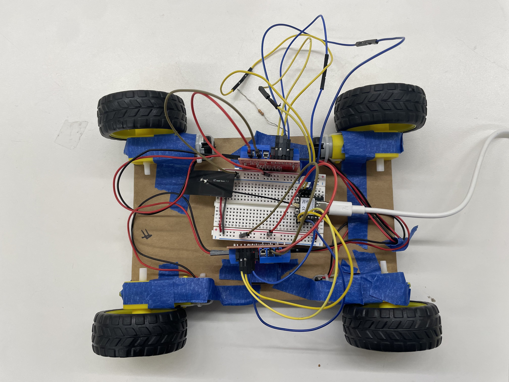

<div class="textcontainer">
<p class="margin"> </p>
<h3>Week 7: Electronic Outputs</h3>
<p class = "margin"></p>
<h4>Assignment: Minimum Viable Product for Final Project</h4>
<p class = "margin"></p>
<p> For this week's assignment, my goal was to prototype the movement feature of my final project (moving table).
I decided to do this by making a smaller-scaled version of the moving base of my project using the materials we had
in lab.
</p>
<p>
To start, I connected 4 DC motors to 2 L298N motor drivers, which I then connected to an ESP32. I also attached
wheels onto each of the DC motors.
</p>
<p>
After doing so, I did some testing on the motors to make sure each of them worked and were properly oriented by running
some test code (i.e. turning on individual wheels, pairs of wheels, and then all wheels). Then, I attached everything to
a cardboard base with masking tape to keep everything modular as I tested.
</p>

<p>
Once the hardware seemed to be working, I had to figure out how to control my motors. The idea
was to take keyboard input from my computer (WASD) to remotely control the motors. After talking to Bobby, we opted to using
an additional ESP32.
</p>
<h4>Communication Workflow:</h4>
<p>
Keyboard input received by ESP32 attached to computer ->
ESP32 (computer) sends the data to ESP32 attached to the motors ->
ESP32 (motor) tells the motor how to moves ->
Wheels rotate, car moves (really a table base, but looks like a car right now)
</p>
<p>
Three programs were created to implement the above communication workflow.
Below, I've provided brief descriptions of how each one works and included links
to download each of the files.
</p>
<h4>Python GUI</h4>
<p> This program creates a GUI for the control system. It handles keyboard input and sends the data to the
ESP32 using python's serial library.
</p>
<a href="computer_to_esp.py" download="gui.py">Python GUI</a>
<p class = "margin"></p>
<h4>ESP32 (Computer)</h4>
<p> This program receives input from the python app (through serial) and then sends it to the motor esp32 using ESP-NOW,
which is a wireless communication protocol that allows ESP32's to communicate with each other without a
router/wifi network. It continuously checks if data was received from serial.
</p>
<a href="controller_sketch.ino" download="controller_sketch.ino">Controller ESP32 Code</a>
<p class = "margin"></p>
<h4>ESP32 (Motor)</h4>
<p> This program receives data from the ESP32 attached to my computer and controls the motors based on the input received.
The program will check which keyboard key was pressed by the user (received from the computer ESP32) and then move the
motors accordingly. For example, if a user holds down A, the program will move the wheels to turn left by
setting the left motors to have a lower speed and the right motors to have a higher speed. It uses PWM to do this.
</p>
<a href="motor_sketch.ino" download="motor_sketch.ino">Motor ESP32 Code</a>
<p class = "margin"></p>
<p> Additionally, I powered the motor ESP32 with a battery so that the moving base can move freely without being
attached to a laptop or plug. I also added antennas to the ESP32's which solved a huge issue I was originally having
the motor control worked only 50% of the time.
</p>
<image style = "width: 250px"src = "wiring_and_battery.jpg" alt = "wiring and battery"> </image>
<p> MVP! Looks kinda like an RC car. There was an issue with the back right motor not moving after testing, but
other than that, the base is functional!
</p>
<image style = "width: 450px; margin-bottom: 10px"src = "car.jpg" alt = "car"> </image>
<video controls width="650">
<source src="car.mp4" type="video/mp4">
</video>
<h4>
Oscilloscope Discoveries
</h4>
<p> Using the oscilloscope to measure the output of the motors when W (forward) is held down, we discovered
that the signal is on for 155 microseconds and off for 45 microseconds. This adds up to our PWM value of 200 for the
motors at max speed. This means every signal is 200 microsseconds. From this, we can calculate that our signal has a
frequency of 5000 Hz, which means it occurs 5000 times/second.
</p>
<image style = "width: 350px"src = "oscilloscope_1.jpg" alt = "oscilloscope 1"> </image>
<image style = "width: 350px"src = "oscilloscope_2.jpg" alt = "oscilloscope 2"> </image>
</div>